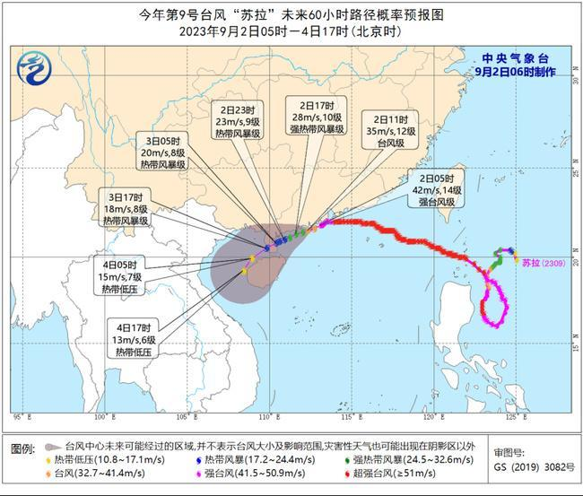

中国天气网讯 今天（9月2日）凌晨3时30分前后，今年第9号台风“苏拉”已登陆广东珠海市南部沿海，成为今年来登陆广东的最强台风。 今天，“苏拉”将向雷州半岛东部近海靠近。受其影响，广东西南部等地局地有大暴雨，沿岸海域阵风可达12~13级。目前恰逢天文大潮期，当地公众要警惕风雨潮叠加影响
目前，西北太平洋上台风进入活跃期，今年第9号台风“苏拉”已于今天凌晨3点30分前后在广东省珠海市南部沿海登陆，强度由超强台风级减弱为强台风级。与此同时，11号台风“海葵”、12号台风“鸿雁”也在发展中。受“苏拉”影响，昨天福建漳州、广东揭阳和汕尾等地出现大到暴雨，福建漳州局地大暴雨，正值开学季，因台风来袭，广东多地宣布延迟开学。
今天早晨5点钟，“苏拉”的中心位于广东省珠海市南部近海，预计，它将以每小时10~15公里的速度向西偏南方向移动，强度逐渐减弱，并向雷州半岛东部近海靠近。此外，“海葵”也将逐渐向我国靠近，今起至5日将影响东海海域及沿海地区。

具体来看，中央气象台预计，今天，内蒙古东北部、云南西南部、华南大部、台湾岛大部等地部分地区有中到大雨，其中，广西东南部、广东西南部、台湾岛东部等地部分地区有暴雨，广东西南部部分地区有大暴雨。
明天，随着“苏拉”逐渐西行，降水核心区域也将有所转移。预计广西南部和东南部沿海、台湾岛等地部分地区有大到暴雨，其中，广西南部、台湾岛等地部分地区有大暴雨，台湾岛东部和南部等地局地特大暴雨。
除了台风带来的降水外，今天，我国降水还主要分布在华北、西南等地。在频繁降水影响下，华北等地秋意将更加明显。
至于西北地区一带，晴天在线，多地白天最高气温能接近或超过高温线，早晚没有了阳光的助力，气温则快速下降，多地昼夜可达15℃，甚至20℃以上，一天之内如同两个季节。
比如兰州，未来三天最高气温均在34℃以上，最低气温17~18℃，昼夜温差可达17℃左右；敦煌未来三天最高气温都将达到35℃以上，遭遇高温炙烤，最低气温却只有14~15℃，昼夜温差在20℃以上，公众需注意根据气温变化及时调整衣物，谨防着凉感冒。
查天气 关注 “中国天气网” 微信公众号、“天气管家”APP安卓版